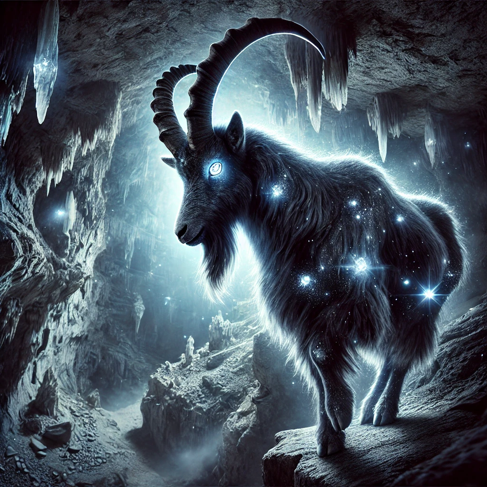
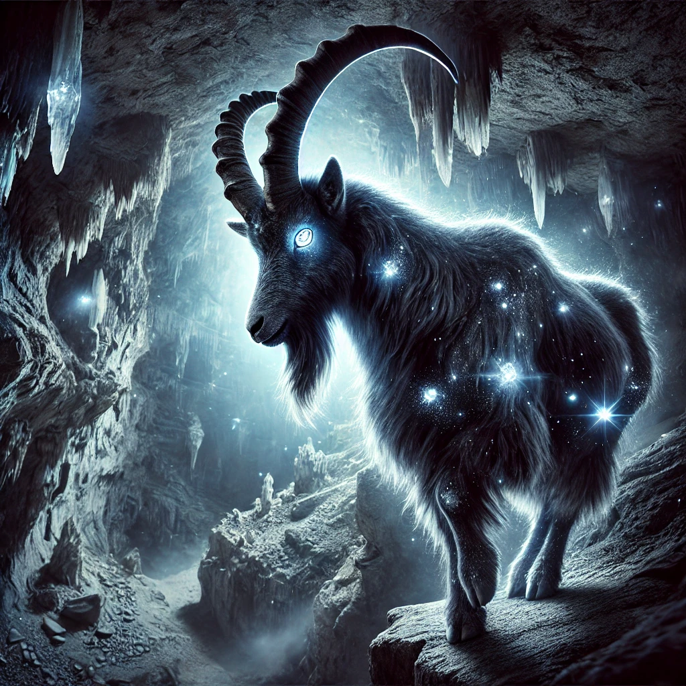

Mit einem tiefen Atemzug griff Anna nach dem brennenden Schwert, das vor ihr auf einem Podest lag. Die Klinge war wie aus flüssigem Metall geformt, die feinen Gravuren glühten in einem intensiven, feurigen Rot. Kaum hatte sie das Schwert in der Hand, spürte sie eine Verbindung, die sie mit Kraft und Entschlossenheit erfüllte. Eine kleine Flamme züngelte an der Spitze der Klinge, als ob sie lebendig wäre.
„Das ist es,“ flüsterte Anna und schwang die Waffe vorsichtig. Die Flamme leuchtete heller und erfüllte die Nebenkammer mit einem warmen Schein. Doch sie wusste, dass das Schwert mehr war als nur eine Waffe – es war ein Schlüssel, eine Herausforderung, eine Verantwortung.
Der unterirdische Pfad, der vor ihr lag, war eng und verschlungen. Die feuchten Wände reflektierten das Licht der Klinge und ließen es wie tanzende Schatten erscheinen. Die Luft war schwer, und der Boden unter ihren Füßen fühlte sich brüchig an. Anna spürte, dass sie beobachtet wurde.
Plötzlich erklang ein lautes Krachen, und der Boden vor ihr brach weg. Aus der Dunkelheit krochen seltsame Kreaturen – kleine, humanoide Gestalten mit glühenden, smaragdgrünen Augen und scharfen Klauen. Sie bewegten sich schnell und lautlos, ihre Körper schienen sich perfekt an die Dunkelheit angepasst zu haben.
Anna hob das Schwert, und die Flamme wurde größer, als ob sie auf die Bedrohung reagierte. Mit einem schnellen Schlag traf sie die erste Kreatur, die mit einem zischenden Schrei verschwand. Die anderen zögerten kurz, bevor sie erneut angriffen. Anna wirbelte herum, ihre Bewegungen wurden von der Flamme geleitet. Nach einem intensiven Kampf war die Luft wieder still, und die Kreaturen hatten sich zurückgezogen.
Weiter vorne stieß Anna auf eine massive Tür, die mit komplexen Runen und Symbolen bedeckt war. In der Mitte der Tür befand sich ein Kreis, der glühte, als sie näherkam. Eine Inschrift erschien:
„Nur das Licht des Feuers wird die Wahrheit offenbaren.“
Anna hielt das Schwert hoch und berührte mit der Klinge den glühenden Kreis. Die Runen begannen sich zu bewegen, und die Tür öffnete sich langsam. Dahinter lag ein Raum, in dessen Mitte eine schwebende Brücke aus Licht zu sehen war, die über einen tiefen Abgrund führte.
Als Anna die Brücke betrat, loderten Flammen an ihren Seiten auf. Die Flammen formten sich zu Gestalten, die wie Geister vergangener Krieger aussahen. Sie umkreisten Anna und sprachen mit donnernden Stimmen: „Bist du würdig, die Flamme zu führen? Zeige uns deine Stärke!“
Anna wusste, dass dies keine Gegner waren, die sie besiegen konnte. Stattdessen konzentrierte sie sich, hielt das Schwert fest und ließ die Flamme heller leuchten. Die Gestalten griffen sie an, doch das Licht des Schwertes schützte sie. Mit jedem Schritt durch die Flammen fühlte sie sich stärker, bis sie schließlich das Ende der Brücke erreichte. Die Geister lösten sich auf, und Anna spürte, dass sie eine weitere Prüfung bestanden hatte.
Nach stundenlangem Wandern durch die Dunkelheit öffnete sich der Tunnel vor ihr zu einer riesigen Höhle. Anna blieb stehen und staunte. Die Wände der Höhle waren mit funkelnden Kristallen und Diamanten bedeckt, die ein sanftes, magisches Licht ausstrahlten. Es war, als wäre die Dunkelheit selbst hier lebendig und wunderschön zugleich.
Doch das Beeindruckendste waren die Tiere, die in dieser Höhle lebten. Auf einem hohen Felsen balancierte eine Herde Steinböcke, deren Augen wie glühende Kohlen leuchteten. Ihr Fell war schuppig und dunkel, perfekt getarnt für die ewige Nacht. In der Nähe stand ein Elch, dessen Geweih mit leuchtenden, smaragdgrünen Kristallen bedeckt war. Sein Körper war massiv und von einer erhabenen Eleganz.
Am Fuße des Felsens bewegte sich eine Herde von Pferden. Ihre Mähnen schimmerten wie flüssiges Silber, und ihre Hufe leuchteten sanft bei jedem Schritt. Es war klar, dass diese Tiere für das Leben in der Dunkelheit geschaffen waren – wunderschön und fremdartig zugleich.
Anna hielt inne und beobachtete die Szene. Die Tiere wirkten nicht bedrohlich, sondern stolz und friedlich. Sie wusste, dass sie in der Höhle etwas Besonderes gefunden hatte, etwas, das ihr Hoffnung für den nächsten Abschnitt ihrer Reise gab.
Mit einem letzten Blick auf die leuchtende Höhle fasste Anna neuen Mut. Die Reise war noch lange nicht vorbei, doch mit dem brennenden Schwert in ihrer Hand und der Aussicht auf eine neue Etappe fühlte sie sich bereit für alles, was kommen würde.